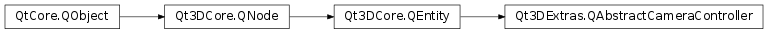

Qt3DExtras.QAbstractCameraController¶
Inherited by: Qt3DExtras.QFirstPersonCameraController, Qt3DExtras.QOrbitCameraController
Note
This class was introduced in Qt 5.10.
Synopsis¶
Functions¶
- def
acceleration() - def
camera() - def
deceleration() - def
keyboardDevice() - def
linearSpeed() - def
lookSpeed() - def
mouseDevice() - def
setAcceleration(acceleration) - def
setCamera(camera) - def
setDeceleration(deceleration) - def
setLinearSpeed(linearSpeed) - def
setLookSpeed(lookSpeed)
Signals¶
- def
accelerationChanged(acceleration) - def
cameraChanged() - def
decelerationChanged(deceleration) - def
linearSpeedChanged() - def
lookSpeedChanged()
Detailed Description¶
The
QAbstractCameraControllerclass provides basic functionality for camera controllers.
QAbstractCameraControllersets up and handles input from keyboard, mouse, and other devices.QAbstractCameraControlleris an abstract class and cannot itself be instantiated. It provides a standard interface for camera controllers.Derived classes need only implement the frameActionTriggered() method to move the camera.
-
class
PySide2.Qt3DExtras.Qt3DExtras.QAbstractCameraController([parent=nullptr])¶ Parameters: parent – PySide2.Qt3DCore.Qt3DCore::QNode
-
PySide2.Qt3DExtras.Qt3DExtras.QAbstractCameraController.acceleration()¶ Return type: PySide2.QtCore.floatSee also
PySide2.Qt3DExtras.Qt3DExtras::QAbstractCameraController.setAcceleration()
-
PySide2.Qt3DExtras.Qt3DExtras.QAbstractCameraController.accelerationChanged(acceleration)¶ Parameters: acceleration – PySide2.QtCore.float
-
PySide2.Qt3DExtras.Qt3DExtras.QAbstractCameraController.camera()¶ Return type: PySide2.Qt3DRender.Qt3DRender::QCameraSee also
PySide2.Qt3DExtras.Qt3DExtras::QAbstractCameraController.setCamera()
-
PySide2.Qt3DExtras.Qt3DExtras.QAbstractCameraController.cameraChanged()¶
-
PySide2.Qt3DExtras.Qt3DExtras.QAbstractCameraController.deceleration()¶ Return type: PySide2.QtCore.floatSee also
PySide2.Qt3DExtras.Qt3DExtras::QAbstractCameraController.setDeceleration()
-
PySide2.Qt3DExtras.Qt3DExtras.QAbstractCameraController.decelerationChanged(deceleration)¶ Parameters: deceleration – PySide2.QtCore.float
-
PySide2.Qt3DExtras.Qt3DExtras.QAbstractCameraController.keyboardDevice()¶ Return type: PySide2.Qt3DInput.Qt3DInput::QKeyboardDeviceProvides access to the keyboard device.
-
PySide2.Qt3DExtras.Qt3DExtras.QAbstractCameraController.linearSpeed()¶ Return type: PySide2.QtCore.floatSee also
PySide2.Qt3DExtras.Qt3DExtras::QAbstractCameraController.setLinearSpeed()
-
PySide2.Qt3DExtras.Qt3DExtras.QAbstractCameraController.linearSpeedChanged()¶
-
PySide2.Qt3DExtras.Qt3DExtras.QAbstractCameraController.lookSpeed()¶ Return type: PySide2.QtCore.floatSee also
PySide2.Qt3DExtras.Qt3DExtras::QAbstractCameraController.setLookSpeed()
-
PySide2.Qt3DExtras.Qt3DExtras.QAbstractCameraController.lookSpeedChanged()¶
-
PySide2.Qt3DExtras.Qt3DExtras.QAbstractCameraController.mouseDevice()¶ Return type: PySide2.Qt3DInput.Qt3DInput::QMouseDeviceProvides access to the mouse device.
-
PySide2.Qt3DExtras.Qt3DExtras.QAbstractCameraController.setAcceleration(acceleration)¶ Parameters: acceleration – PySide2.QtCore.floatSee also
PySide2.Qt3DExtras.Qt3DExtras::QAbstractCameraController.acceleration()
-
PySide2.Qt3DExtras.Qt3DExtras.QAbstractCameraController.setCamera(camera)¶ Parameters: camera – PySide2.Qt3DRender.Qt3DRender::QCameraSee also
PySide2.Qt3DExtras.Qt3DExtras::QAbstractCameraController.camera()
-
PySide2.Qt3DExtras.Qt3DExtras.QAbstractCameraController.setDeceleration(deceleration)¶ Parameters: deceleration – PySide2.QtCore.floatSee also
PySide2.Qt3DExtras.Qt3DExtras::QAbstractCameraController.deceleration()
-
PySide2.Qt3DExtras.Qt3DExtras.QAbstractCameraController.setLinearSpeed(linearSpeed)¶ Parameters: linearSpeed – PySide2.QtCore.floatSee also
PySide2.Qt3DExtras.Qt3DExtras::QAbstractCameraController.linearSpeed()
-
PySide2.Qt3DExtras.Qt3DExtras.QAbstractCameraController.setLookSpeed(lookSpeed)¶ Parameters: lookSpeed – PySide2.QtCore.floatSee also
PySide2.Qt3DExtras.Qt3DExtras::QAbstractCameraController.lookSpeed()
© 2018 The Qt Company Ltd. Documentation contributions included herein are the copyrights of their respective owners. The documentation provided herein is licensed under the terms of the GNU Free Documentation License version 1.3 as published by the Free Software Foundation. Qt and respective logos are trademarks of The Qt Company Ltd. in Finland and/or other countries worldwide. All other trademarks are property of their respective owners.